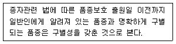
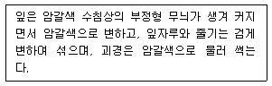
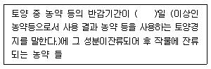

종자산업기사 (2015-03-08 기출문제)
1과목: 종자생산학 및 종자법규
1. 다음 중 종자의 구별성에 관한 설명 중 밑출 친 부분에 해당하지 않는 것은?

- 보호품종
- 유통되고 있는 품종
- 품종목록에 등재되어 있는 품종
- 농림축산식품부령으로 정하는 종자산업과 관련된 협회에 등록되어 있는 품종
(정답률: 52%)

2. 종자업의 정의로 맞는 것은?
- 종자의 생산 및 판매를 업(業)으로 하는 것을 말한다.
- 종자의 매매를 업(業)으로 하는 것을 말한다.
- 종자생산시설을 관리하는 업(業)을 말한다.
- 종자보증을 업(業)으로 하는 것을 말한다.
(정답률: 88%)
3. 다음 중 무수정생식의 특징으로 옳은 것은?
- 유성생식에서와 달리 꽃 이외의 기관에서 수정된다.
- 난핵과 웅핵(정핵)의 결합이 없다.
- 극핵과 웅핵(정핵)이 결합하는 것이다.
- 단위생식이 아닌 유성생식이다.
(정답률: 71%)
4. 겉보리 포장검사 시 표본 10,000주 중 겉깜부기병 10주, 속깜부기병 20주, 흰가루병 30부, 붉은곰팡이병 40주가 조사되었다. 이 때 특정병의 비율은?
- 0.1%
- 0.3%
- 0.6%
- 1.0%
(정답률: 75%)
5. 다음 중 종자보급체계에서 원종(原種)으로 가장 옳은 것은?
- 기본식물에서 1세대 증식된 종자
- 원원종에서 1세대 증식된 종자
- 보급종에서 1세대 증식된 종자
- 보급종에서 2세대 증식된 종자
(정답률: 92%)
6. 다음 중 종자소독에 주로 사용되는 약제가 아닌 것은?
- 베노일 ‧ 타람수화제
- 페니트로티온 유제
- 헥사지논 입제
- 프로클로라즈 유제
(정답률: 63%)
7. 등숙기의 저온감응이 차대식물의 화아분화에 영향을 미칠 수 있는 것은?
- 무
- 글라디올러스
- 벼
- 상추
(정답률: 49%)
8. 다음 중 종자의 휴면타파에 사용되고 있는 생장조절제는?
- Gibberellin, Cytokinin
- Cytokinin, Tryptophan
- Tryptophan, Phytochrone
- ABA, Gibberellin
(정답률: 85%)
9. 품종목록등재 취소사유가 아닌 것은?
- 품종성능이 심사기준에 미달된 때
- 등록된 품종명칭이 취소된 때
- 부정한 방법으로 품종의 목록의 등재를 받은 때
- 등재된 품종의 종자를 생산하지 않을 때
(정답률: 89%)
10. 종자검사 용어 중 소집단에서 추출한 모든 1차 시료를 혼합하여 만든 시료는 무엇인가?
- 제출시료(Subnitted sample)
- 합성시료(conposite sample)
- 검사시료(Working samole)
- 분할시료(Sub-samole)
(정답률: 79%)
11. 다음 중 배유(endosperm)의 형성은?
- 정핵과 난핵의 융합
- 정핵과 극핵의 융합
- 정핵과 반족세포의 융합
- 정핵과 조세포의 융합
(정답률: 72%)
12. 다음 중 발아촉진물질이 아닌 것은?
- KNO3
- Thiourea
- Ethylene
- Phenolicacid
(정답률: 52%)
13. 다음 중 혐광성(암발아성)종자로만 짝지어진 것은?
- 담배, 무
- 쑥갓, 우엉
- 가지, 토마토
- 파, 상추
(정답률: 50%)
14. 실시의 정의로 가장 알맞은 것은?
- 보호품종의 종자를 생산하는 행위를 말한다.
- 보호품종의 종자를 생산∙조제∙양도∙대여하는 행위를 말한다.
- 보호품종의 종자를 생산∙조제∙양도∙대여∙수출 또는 수입하는 행위를 말한다.
- 보호품종의 종자를 증식∙생산∙조제∙양도∙대여∙수출 또는 수입하거나 양도 또는 대여의 청약을 하는 행위를 말한다.
(정답률: 74%)
15. 성숙한 종자에 없었던 휴면이 외부의 환경조건에 의해, 일어나는 휴면을 무엇이라고 하는가?
- 자발휴면
- 강제휴면
- 제1차 휴면
- 제2차 휴면
(정답률: 72%)
16. 다음 중 화아유도에 영향을 미치는 요인으로 가장 거리가 먼 것은?
- 습도
- 일장
- 온도
- 화학물질
(정답률: 69%)
17. 국가기술자격법에 따른 ‘종자산업기사‘ 자격 취득자로서 종자관리사가 되기 위하여 갖추어야할 경력기준은?
- 종자업무 또는 이와 유사한 업무에 2년 이상 종사한 자
- 종자업무 또는 이와 유사한 업무에 5년 이상 종사한 자
- 종자업무 또는 이와 유사한 업무에 7년 이상 종사한 자
- 종자업무 또는 이와 유사한 업무에 10년 이상 종사한 자
(정답률: 83%)
18. 종자 발아검정시 사용하는 발아시험지(종이배지)의 구비여건에 해당하지 않는 것은?
- 흡습성이 충분해야 한다.
- 뿌리가 뚫고 들어가기 쉬워야 한다.
- 젖은 상태에서 잘 찢어지지 않아야 한다.
- 유독물질이 없어야한다.
(정답률: 81%)
19. 다음 중 유통종자의 품질표시를 하지 아니하고 종자를 판매, 보급한 자에 대한 벌칙으로 맞는 것은?
- 3년 이하의 징역 또는 1천만원이하의 벌금
- 1년 이하의 징역 또는 1천만원이하의 벌금
- 1천만원 이하의 과태료
- 50만원 이하의 과태료
(정답률: 53%)
20. 종자의 외적요인 중 종자의 수명에 영향을 미치는 요인으로 가장 거리가 먼 것은?
- 질소가스의 농도
- 탄산가스의 농도
- 산소가스의 농도
- 수분의 함량
(정답률: 64%)
2과목: 식물육종학
21. 다음 중 자식성 식물로만 짝지어진 것은?
- 벼, 시금치, 담배
- 벼, 밀, 콩
- 벼, 옥수수, 오이
- 벼, 호밀, 메밀
(정답률: 69%)
22. 변이를 일으키는 원인에 따라서 구별한 것에 속하지 않는 변이는?
- 장소변이
- 연속변이
- 교배변이
- 돌연변이
(정답률: 47%)
23. 신품종의 구비조건이 아닌 것은?
- 영속성
- 우수성
- 균등성
- 감온성
(정답률: 87%)
24. 자웅이주 식물로 가장 옳은 것은?
- 벼
- 보리
- 콩
- 호프
(정답률: 66%)
25. 다음 중 환경의 영향을 비교적 덜 받는 질적형질에 해당하는 것으로 가장 옳은 것은?
- 영화수
- 분얼수
- 종피색
- 수량
(정답률: 87%)
26. 유전적 원인에 의한 불임성에 속하는 것은?
- 다즙질 불임성
- 쇠약질 불임성
- 웅성불임성
- 순환적 불임성
(정답률: 84%)
27. F2 분리비를 관찰하여서 각각의 유전인자가 독립유전을 하는지의 여부를 검정할 때 쓰이는 방법은?
- t 검정
- F 검정
- X2 검정
- 상관 검정
(정답률: 57%)
28. 유전자의 상호작용 중에서 대립유전자 내의 작용인 것은?
- 복대립 유전자
- 보족유전자
- 억제유전자
- 변경유전자
(정답률: 76%)
29. 생산력검정의 포장시험을 할 때 오차가 생길 수 있다. 오차가 생기는 원인과 가장 관계가 없는 것은? (문제 오류로 실제 시험에서는 1, 4번이 정답처리 되었습니다. 여기서는 1번을 누르면 정답 처리 됩니다.)
- 작물의 원산지 파악이 불명확할 때
- 실험계획의 결함과 실험의 취급이 불완전할 때
- 실험결과에 대한 해석이 잘못 되었을 때
- 시험조작, 측정, 포장관리 등에 있어서 개인에 의한 차이가 있을 때
(정답률: 89%)
30. 여교잡을 2회 하면 반복친을 닮을 비율은?
- 50%
- 75%
- 87.5%
- 93.75
(정답률: 59%)
31. 유전자의 상호작용에 의하여 F2세대에서 각각 9:7(a)과 15:1(b)의 표현형 분리비를 나타내는 유전자는?
- (a) 보족유전자, (b) 중복유전자
- (a) 피복유전자, (b) 복수유전자
- (a) 변경유전자, (b)중복유전자
- (a) 억제유전자, (b) 치사유전자
(정답률: 79%)
32. 인공교배를 위한 개화기의 조절방법이 아닌 것은?
- 파종기에 의한 조절
- 비배에 의한 조절
- 춘화처리에 의한 조절
- 삽목에 의한 조절
(정답률: 56%)
33. 잡종강세 육종에서 단교잡종보다 복교잡종의 유리한 점은?
- 잡종강세의 발현이 현저하다.
- 불량형질이 나타나는 경우가 적다.
- 채종량이 많다.
- 품질이 균일하다.
(정답률: 68%)
34. 다음 중 반수체를 유발시키기 위한 방법으로 옳지 않은 것은?
- 종∙속∙간 교배
- 화학약품의 처리
- 화분배양
- 배배양
(정답률: 55%)
35. 단위결과를 자연적으로 볼 수 있는 작물로만 짝지어 진 것은?
- 바나나, 감귤, 포도
- 바나나, 복숭아, 배
- 무화과, 사과, 포도
- 무화과, 밤, 사과
(정답률: 83%)
36. 인간이 유전자 변이를 창성하여 육종에 이용하고 있는 것으로 옳은 것은?
- 자연계에서 변이를 탐색하여 이용
- 인위돌연변이를 유발하여 이용
- 야생종에서 변이를 찾아서 이용
- 재래종에 포함된 변이를 분리하여 이용
(정답률: 69%)
37. 2n × 20인 작물의 연관군 개수는?
- 5개
- 10개
- 20개
- 40개
(정답률: 55%)
38. 자식성 작물의 화기구조에 대한 설명으로 옳지 않은 것은?
- 화분립은 꽃이 열개하기 전에 비산한다.
- 암술머리는 꽃가루가 터지기 전에 길어진다.
- 꽃가루와 암술머리의 성숙기가 같고 화기가 잘 열린다.
- 암술머리나 꽃밥이 열개한 후에도 꽃잎에 의하여 감추어져 있다.
(정답률: 49%)
39. F2집단에서 유전자형의 종류는 3n으로 계산된다. AaBbCcDd 후대에서 유전자형의 종류수는?
- 27
- 81
- 243
- 256
(정답률: 76%)
40. 여교배육종의 이용으로 옳지 않은 것은?
- 몇 개의 품종이 가지고 있는 서로 다른 유용 형질을 한 품종에 모으려 할 때
- 게놈이 다른 종‧속의 유용 유전자를 재배 중에 도입 하고자 할 때
- 동질유전자계통을 육성하여 다계혼합품종을 만들고자 할 때
- 폴리진 등 여러 개의 유전자가 관여하는 형질을 실용품종에 이전하고자 할 때
(정답률: 49%)
3과목: 재배원론
41. 다음은 질소비료의 종류를 화학식으로 나타낸 것이다. 시용하면 주로 음이온이 되어 토양 교질에 잘 흡착되지 않고 유실되기 때문에 논보다 밭작물에 유리한 비료는?
- (NH4)2SO4
- NH4NO3
- (NH2)2CO
- CaCN2
(정답률: 67%)
42. 방사성 동위원소가 방출하는 방사선 중에 가장 현저한 생물적 효과를 가진 것은?
- X선
- α선
- β선
- γ선
(정답률: 85%)
43. 모관수(capillary water)의 설명으로 옳지 않은 것은?
- 밭작물 재배 포장에서는 대부분 불필요하게 과잉 수분으로 존재한다.
- pf 2.7~4.5로서 작물이 주로 이용하는 수분이다.
- 모세관현상에 의해서 지하수가 모관공극을 상승하여 공급된다.
- 표면장력에 의해 토양공극 내에서 중력에 저항하여 유지된다.
(정답률: 67%)
44. 작물의 생리적 또는 형태적 요인에 따른 내동성 정도를 옳게 설명한 것은?
- 원형질의 점도가 낮고 연도가 높으면 내동성이 낮다.
- 원형질 단백질에 –SS기가 많은 것이 –SH기가 많은 것에 비하여 내동성이 크다.
- 포복성인 것이 직립성인 것에 비하여 내동성이 낮다.
- 세포의 수분함량이 높으면 세포의 결빙을 조장하여 내동성이 낮다.
(정답률: 48%)
45. 보리의 춘화처리(버널리제이션)에 필요한 종자의 흡수율(흡수량)로 가장 적당한 것은?
- 15%
- 25%
- 35%
- 50%
(정답률: 58%)
46. 벼 군락의 수광태세가 좋은 초형 조건으로 거리가 먼 것은?
- 잎이 지나치게 얇지 않고, 약간 좁으며, 상위엽이 직립한다.
- 줄기가 굵고 가능한 한 키가 최대로 크다.
- 분얼이 조금 개산형 이다.
- 각 잎이 공간적으로 되도록 균일하게 분포한다.
(정답률: 72%)
47. 생력작업을 위한 기계화 재배의 전체조건이 아닌 것은?
- 대규모 경지정리
- 적응재배체계의 확립
- 집단재배
- 제초제의 미사용
(정답률: 88%)
48. 식물의 굴광현상이 가장 유효한 광은?
- 황색광
- 적색광
- 청색광
- 녹색광
(정답률: 88%)
49. 인공영양번식에서 환상박피처리를 하는 번식법으로 가장 적절한 것은?
- 삽목
- 취목
- 복접
- 지접
(정답률: 66%)
50. 일반적으로 작물생육에 적합한 토양 3상의 비율은?(단, 고상, 액상, 기상의 순으로 나열)
- 60%, 20%, 20%
- 50%, 30%, 20%
- 25%, 50%, 25%
- 20%, 60%, 20%
(정답률: 78%)
51. 붕소(B)dp 대한 설명으로 옳지 않은 것은?
- 고등식물의 필수원소이다.
- 결핍시 분열조직의 괴사현상이 나타난다.
- 석회 부족 상태에서 붕소의 시비는 석회 결핍의 영향을 증가시킨다.
- 결핍증으로 갈색속썩음병, 줄기쪼김병, 끝마름병이 있다.
(정답률: 61%)
52. 수목의 묘목(苗木)을 기르는 곳을 자칭하는 용어는?
- 묘대
- 묘상
- 못자리
- 묘포
(정답률: 59%)
53. 다음의 생장조절제 중 유형이 다른 하나는?(오류 신고가 접수된 문제입니다. 반드시 정답과 해설을 확인하시기 바랍니다.)
- NAA
- IAA
- 2,4-D
- CCC
(정답률: 43%)
54. 인과류 로만 나열되어 있는 것은?
- 사과, 배, 비파
- 무화과, 딸기, 포도
- 복숭아, 앵두, 자두
- 감, 밤, 대두
(정답률: 82%)
55. 생육기간의 적산온도가 가장 낮은 작물은?
- 벼
- 담배
- 조
- 메밀
(정답률: 66%)
56. 다음 중 요수량이 가장 튼 작물은?
- 감자
- 완두
- 옥수수
- 보리
(정답률: 45%)
57. 혼파에 관한 설명으로 틀린 것은?
- 시비, 병충해 방제 등의 관리가 용이하다.
- 공간을 효율적으로 이용할 수 있다.
- 재해에 대한 안정성이 증대된다.
- 잡초를 경감시킬 수 있다.
(정답률: 57%)
58. 화성유도의 주요인으로 가장 거리가 먼 것은?
- 영양상태
- 식물의 수분함량
- 광조건
- 온도조건
(정답률: 35%)
59. 수분수(受粉樹)로서 갖추어야 할 기본 조건으로 틀린 것은?
- 과실 생산이나 품질이 우수할 것
- 개화시기가 주품종보다 늦거나 같을 것
- 주품종과 친화성이 높을 것
- 건전한 꽃가루의 생산이 많을 것
(정답률: 77%)
60. 내건성 작물의 특성을 가장 잘 설명한 것은?
- 건조할 때에 단백질의 소실이 빠르다.
- 건조할 때에 호흡이 낮아지는 정도가 작다.
- 원형질의 점성이 낮고 수분 보유력이 강하다.
- 원형질막의 수분 투과성이 크다.
(정답률: 35%)
4과목: 식물보호학
61. 약제의 주성분을 공기 중에다 안개와 같은 작은 입자로 부유시키는 방법으로 높은 농도의 약제를 짧은 시간에 처리할 수 있는 제형은?
- 분제
- 수화제
- 훈연제
- 연무제
(정답률: 67%)
62. 다음 중 우리나라에서 월동하지 못하는 비래 해충으로만 짝지어진 것은?
- 벼멸구, 흰등멸구
- 애멸구, 흰등멸구
- 벼멸구, 이화명나방
- 끝동매미충, 이화명나방
(정답률: 50%)
63. 완전변태를 하는 곤충 중 날개가 1쌍인 것은?
- 벌목
- 파리목
- 나비목
- 날도래목
(정답률: 70%)
64. 벼 도열병 방제 방법에 대한 설명으로 옳지 않은 것은?
- 종자를 소독한다.
- 질소거름이나 녹비의 과용을 피한다.
- 이삭목도열병은 못자리 때에 약제를 살포한다.
- 방제 약제로 이프로벤포스 유제, 카프로파미드 액상수
(정답률: 54%)
65. 일반적인 곤충의 특징이 아닌 것은?
- 다리는 5마디로 되어 있다.
- 공통적으로 날개를 가지고 있다.
- 머리, 가슴, 배의 3부분으로 되어 있다.
- 입은 크게 나누어 씹는 입틀과 빠는 입틀로 나눌 수 있다.
(정답률: 66%)
66. 다음 중 선택성 제초제로 옳은 것은?
- 2,4-D
- Paraquat
- Sulfosate
- Glufosinate
(정답률: 86%)
67. 잡초 종자 발아 생리 조건과 거리가 먼 것은?
- 영양
- 산소
- 수분
- 온도
(정답률: 57%)
68. 잡초의 생태적 방제방법으로 옳은 것은?
- 연작시킨다.
- 작물을 선점시킨다.
- 전체적으로 시비한다.
- 작물의 재식밀도를 낮춘다.
(정답률: 54%)
69. 에프 유제를 1,000배로 희석해서 10a당 100L 살포하려 할 때 소요 약량은?
- 1ml
- 10ml
- 100ml
- 1000ml
(정답률: 80%)
70. 제초제의 제형에 계면활성제를 첨가하는 이유로 가장 거리가 먼 것은?
- 습윤성 증진
- 확산성 증진
- 분산성 증진
- 휘발성 증진
(정답률: 71%)
71. 벼의 즙액을 빨아먹어 직접 피해를 주고, 간접적으로는 바이러스를 매개하여 벼 줄무늬잎마름병을 유발시키는 것은?
- 애멸구
- 벼멸구
- 벼잎벌레
- 흰등멸구
(정답률: 76%)
72. 다음 설명하는 감자의 병은?

- 역병
- 더뎅이병
- 잎말림병
- 둘레썩음병
(정답률: 55%)
73. 해충방제에 있어서 생물적 방제의 장점은?
- 비용이 저렴하다.
- 방제효과가 빠르다.
- 천적 생물의 유지가 용이하다.
- 해충이 농약에 내성이 생길 염려가 없다.
(정답률: 74%)
74. 잡초의 번식에 대한 설명으로 옳은 것은?
- 올방개는 인경으로 영양번식을 한다.
- 야생마늘은 직근으로 영양번식을 한다.
- 냉이는 이듬해에 종자를 맺는 유성생식을 한다.
- 버뮤다그래스는 다년생 잡초로서 유성생식을 한다.
(정답률: 56%)
75. 다음 중 작물 피해의 원인이 되지 않는 것은?
- 응애
- 바이러스
- 방화곤충
- 대기오염
(정답률: 67%)
76. 다음 중 식물병 대발생에 대한 것으로 옳은 것은?
- 스리랑카에서 커피 녹병 발생
- 미국에서 벼 재씨무늬병의 발생
- 아일랜드 지방의 고구마 역병 발생
- 인도 벵갈지방의 옥수수 재씨무늬병 발생
(정답률: 75%)
77. 토양잔류성 농약 등의 설명으로 ( )에 알맞은 것은?

- 60
- 90
- 180
- 365
(정답률: 82%)
78. Ptrytoplasna에 대한 설명으로 옳은 것은?
- 리보솜이 없다.
- 인공배양 되지 않는다.
- 2분열 증식을 하지 못한다.
- 바이로이드보다 크기가 작다.
(정답률: 47%)
79. 작물에 피해를 미치는 잡초의 공통적인 속성이 아닌 것은?
- 종자의 장구한 수명
- 가축용 사료로 이용가능
- 다양한 환경조건에 대한 적응성
- 개화에서 결실까지 빠른 생장 특성
(정답률: 74%)
80. 식물 바이러스의 검출에 많이 사용하는 효소결합항체법은 무엇인가?
- MRI
- PNP
- HPLC
- ELISA
(정답률: 83%)